A two-market workforce analytics platform that transforms real UK and Pakistan job-posting data into structured skills, salary, market-demand, and career intelligence through NLP, SQL, and Power BI.
An end-to-end analytics pipeline that ingests raw job postings from multiple sources, engineers structured intelligence through NLP, stores results in PostgreSQL, and produces analytical outputs for Power BI and Python visualization.
Multi-source ingestion, validation, deduplication, and cleaning of 8,256 job postings from Adzuna UK and CHISEL/LUMS Pakistan.
Lexicon-based skill extraction with contextual disambiguation, reducing false positives by 75% through pattern analysis and validation.
13 SQL analytical views, Python statistical analysis, and a 10-page Power BI dashboard specification for workforce intelligence.
Recent UK job-posting data (2023–2026) from the Adzuna API, covering data and analytics roles across 107 cities with comprehensive salary information.
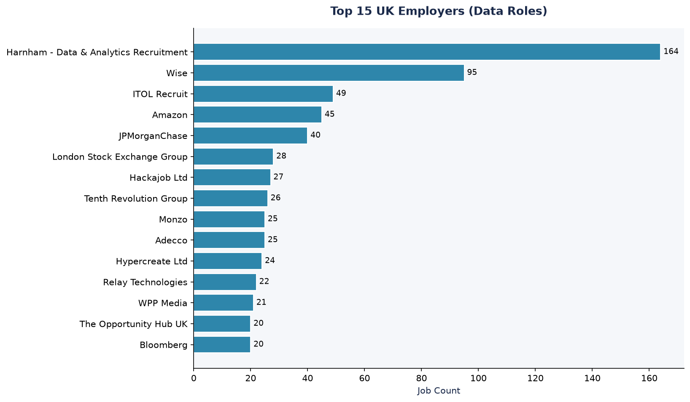
Historical Pakistan job-posting data (2019–2021) from the CHISEL/LUMS academic dataset, with 16 supplementary Rozee.pk postings. The dataset provides a snapshot of Pakistan’s data and tech workforce demand during this period.
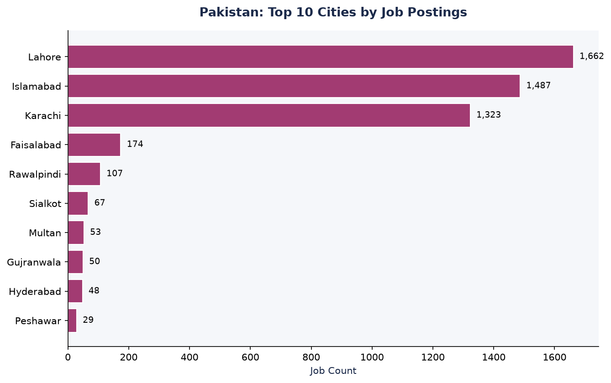
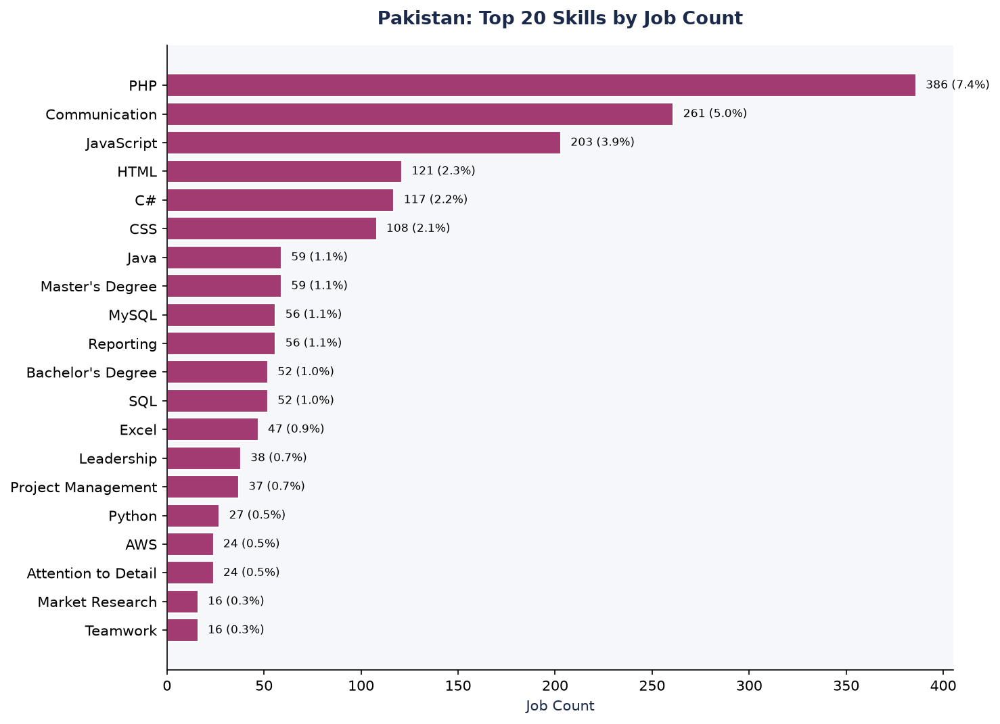
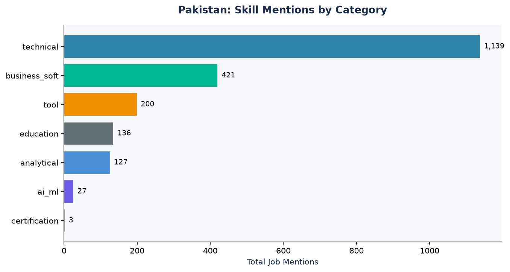
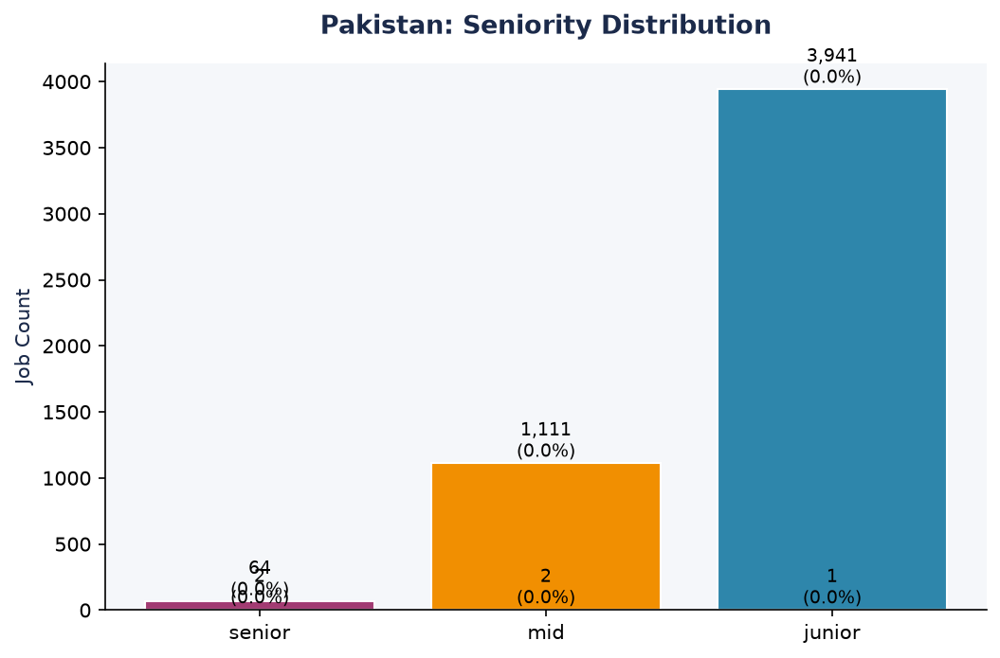
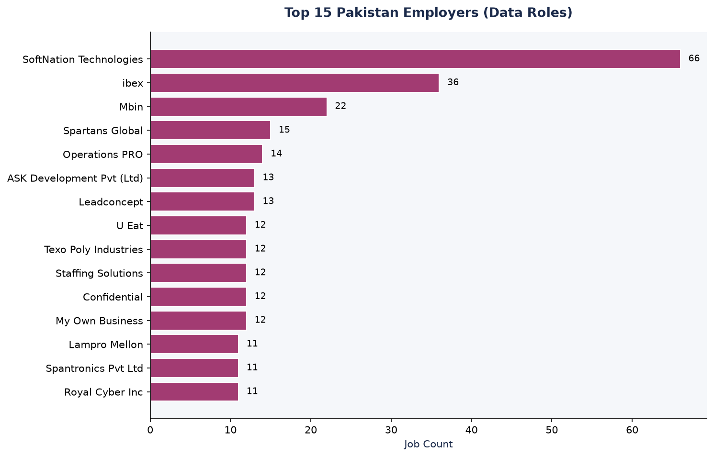
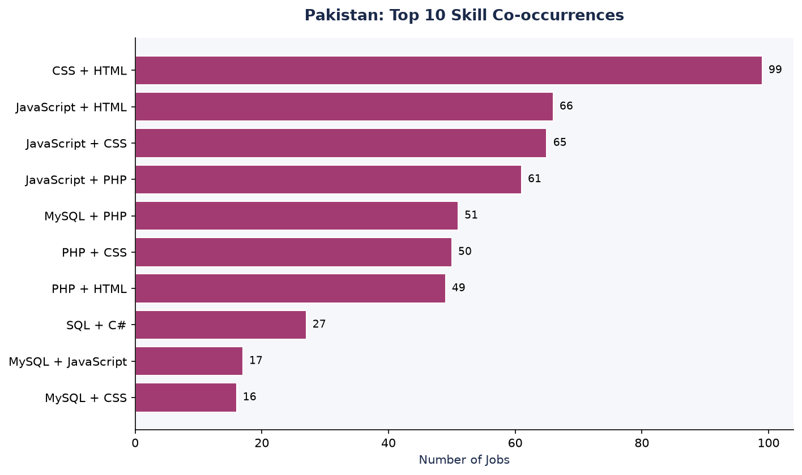
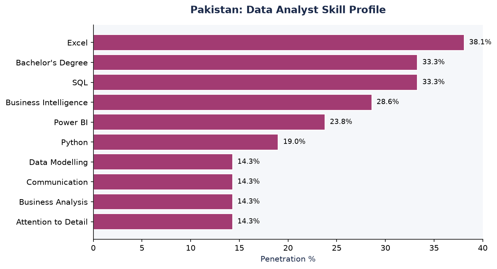
A dataset-based comparison of two fundamentally different job markets. The UK data is recent (2023–2026); the Pakistan data is historical (2019–2021). Differences reflect both real market structures and different collection periods.
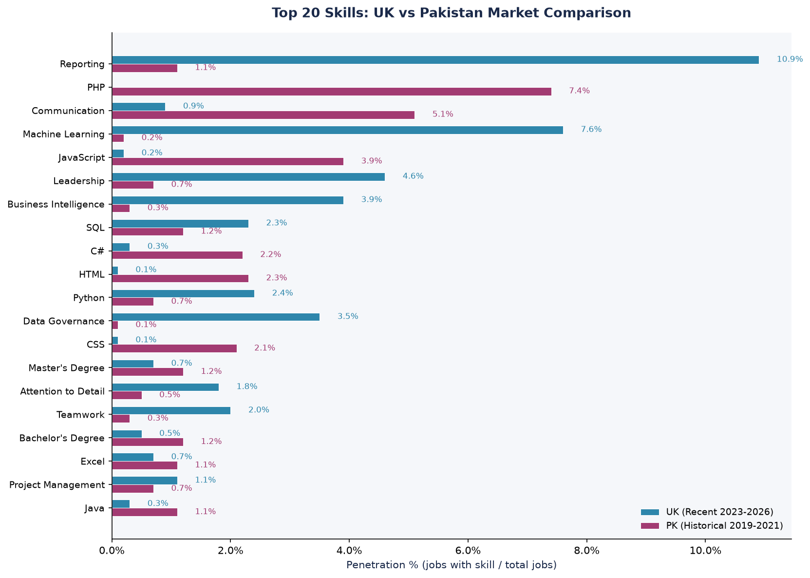
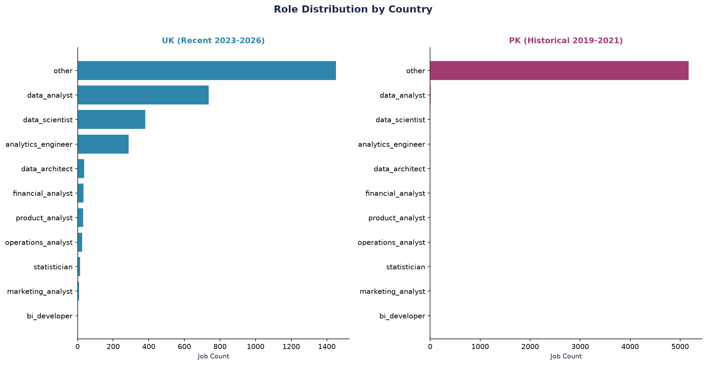
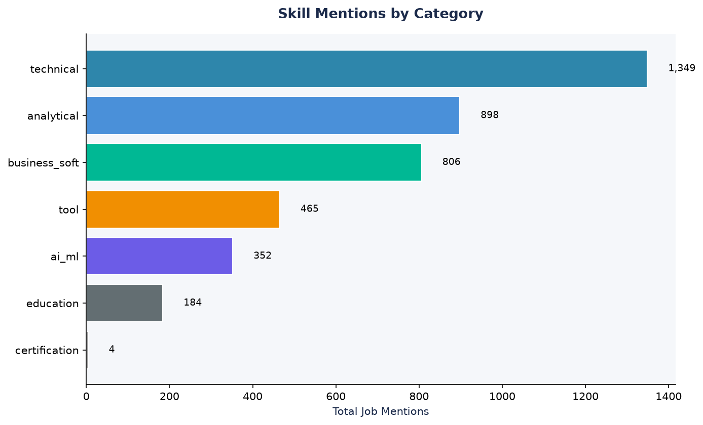
London: 76.3% of UK postings (2,312 jobs)
Greater London: 16.9% (513 jobs)
UK Other: 6.7% (204 jobs)
Cities: 107 total
Pattern: Extreme London concentration
Lahore: 31.8% (1,662 jobs)
Islamabad: 28.4% (1,487 jobs)
Karachi: 25.3% (1,323 jobs)
Cities: 86 total
Pattern: Three-city distribution
A Chi-square test confirms that skill distributions differ significantly between UK and Pakistan (chi-squared = 1,477.35, p ≈ 0, df = 9). This is expected: UK data roles emphasize reporting and ML, while Pakistan emphasizes web development and communication skills.
London represents a significant concentration of UK data and analytics roles. This section is a deep-dive within the UK analysis, not the entire project.
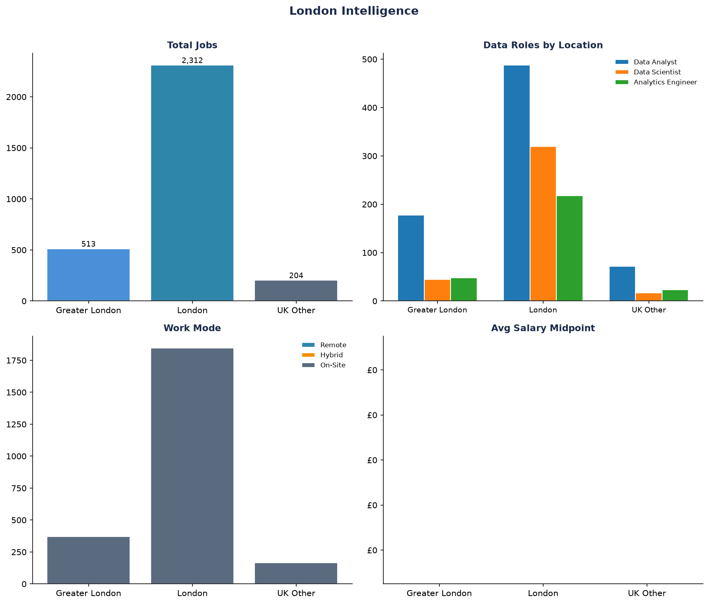
77 normalized skills extracted across both markets, organized into technical, analytical, AI/ML, tool, and business-soft categories.
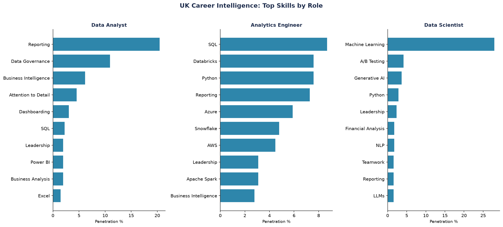
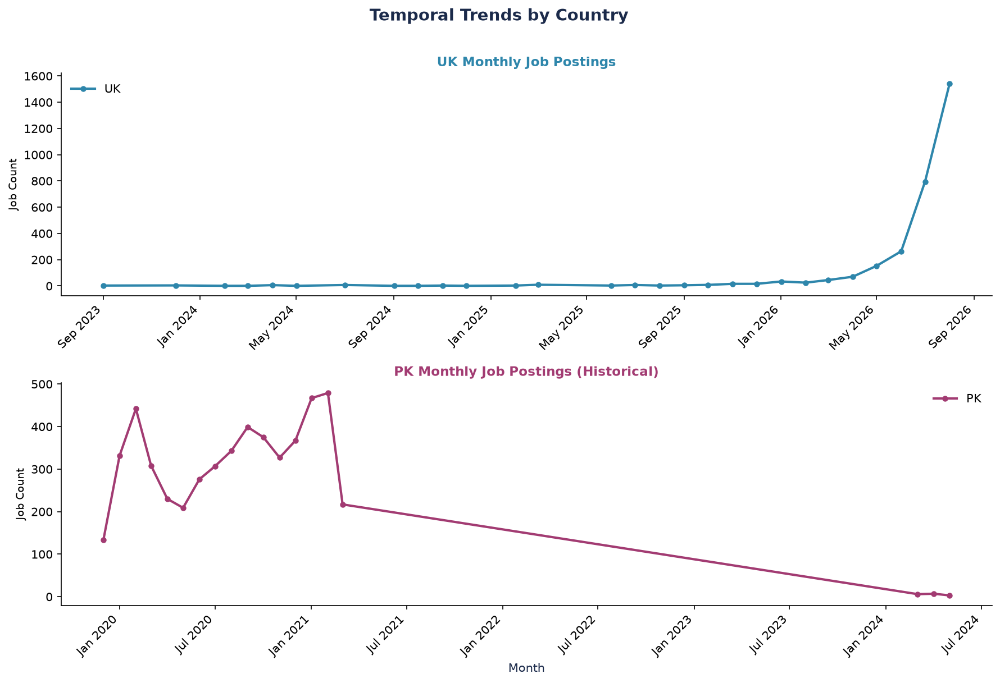
Salary analysis is available for UK postings only. The Pakistan CHISEL dataset does not contain comparable salary information. A small Rozee.pk sample (16 records) provides limited PKR data.
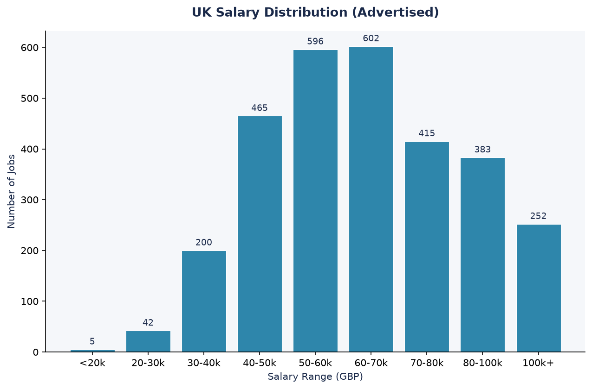
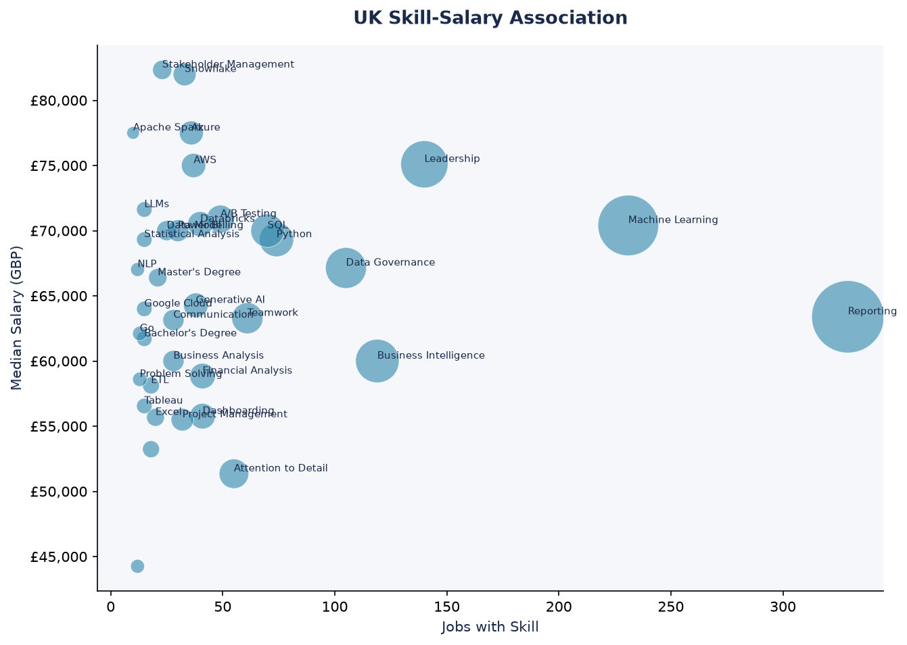
The Pakistan CHISEL dataset does not contain salary information. A small Rozee.pk supplementary sample (16 records) contains PKR-denominated salaries ranging from 65,000 to 285,000 PKR/month, but this sample is too small to be representative. Pakistan salary coverage is insufficient for a robust UK-vs-Pakistan salary comparison.
A 10-page Power BI dashboard specification with 50+ DAX measures, star schema model, and complete design system. Balanced coverage of both UK and Pakistan markets.
High-level metrics for both markets: job volume, skill count, employer count, and cross-market comparison highlights.
UK-specific analysis: role distribution, skills, seniority, salary, employers, and temporal trends.
Pakistan-specific analysis: role distribution, skills, seniority, employers, city distribution, and temporal trends.
Side-by-side comparison: skills, roles, seniority, geographic concentration, and skill categories.
UK geographic sub-analysis: London vs Greater London vs UK Other across roles, salary, and work mode.
Cross-market skill analysis, co-occurrence patterns, and career progression insights.
The analytical layer identifies skill demand patterns across career stages in both the UK and Pakistan data professions. This is market intelligence from the collected job-posting data, not a personalized recommendation engine.
UK demand: 738 postings (24.4%)
UK top skills: SQL, Python, Reporting, Excel, Tableau
PK demand: 21 postings (0.4%)
PK top skills: Excel (38.1%), SQL (33.3%), BI (28.6%)
Overlap: SQL, Excel are common to both markets
UK demand: 382 postings (12.6%)
UK top skills: Python, Machine Learning, SQL, TensorFlow
PK demand: 9 postings (0.2%)
PK top skills: ML (66.7%), NLP (44.4%), Python (33.3%)
Overlap: Python and ML appear in both markets
UK demand: 289 postings (9.5%)
UK top skills: SQL, Python, dbt, Airflow, Data Modeling
PK demand: 4 postings (0.1%)
PK top skills: Insufficient data for meaningful profile
Note: Emerging role with limited PK representation
Each stage adds structure, quality, and analytical value to the raw postings.
78 canonical skills with alias matching, contextual disambiguation, word-boundary enforcement, and confidence scoring. Before remediation: 28,972 total skill mentions. After: 7,256 validated mentions (75% reduction).
14 normalized production tables with foreign key relationships. 13 analytical views with documented grain. Star schema optimized for Power BI import. All views cross-validated against Python outputs.
127 tests across 8 test modules covering pipeline E2E, skill extraction, normalization, analytics, data quality reporting, duplicate detection, text cleaning, and validation.
Chi-square test confirms skill distribution differs significantly between UK and PK (chi-squared = 1,477.35, p ≈ 0, df = 9). Mann-Whitney U test on UK salary by seniority shows no significant difference (p=0.07).
Analytical credibility requires acknowledging what the data cannot tell us.
Evidence-based findings from the analytical layer. Each finding is supported by the validated Phase 5 outputs.
UK emphasizes reporting, ML, and BI tools. Pakistan emphasizes PHP, communication, and web technologies. Chi-square test confirms significant difference (p ≈ 0).
46.5% of UK postings are classified as Data Analyst, Data Scientist, or Analytics Engineer. The remaining 48% are “other” roles that require data-adjacent skills.
PHP, JavaScript, HTML, CSS, C#, and Java dominate Pakistan’s skill profile, reflecting a software-development-heavy job market during the CHISEL collection period (2019–2021).
UK: 76.3% London-dominated. Pakistan: three-city distribution (Lahore 31.8%, Islamabad 28.4%, Karachi 25.3%).
75.4% of Pakistan postings are junior-level vs 49.8% in UK. Only 1.3% of Pakistan postings are senior vs 15.9% in UK.
SQL and Python appear across all three target roles in the UK. In Pakistan, Excel and SQL lead the Data Analyst profile. Python appears in both markets for Data Scientist roles.
Every technology listed is actively used in the pipeline. No decorative dependencies.
An end-to-end workflow from raw data to career intelligence, demonstrating skills across the full data analytics stack for two distinct job markets.
Multi-source ingestion from Adzuna UK API and CHISEL/LUMS Pakistan CSV. Schema normalization, validation, deduplication, and PostgreSQL storage with referential integrity.
Every skill extraction records confidence level, source field, extraction method, and context window. 75% false-positive reduction through contextual disambiguation.
13 SQL analytical views with documented grain. Statistical validation confirming significant skill distribution differences between UK and Pakistan (chi-squared = 1,477.35).
Power BI dashboard specification with 50+ DAX measures, semantic model design, and 10-page layout covering both UK and Pakistan markets.
Market-derived skill profiles for Data Analyst, Data Scientist, and Analytics Engineer roles across both UK and Pakistan job-posting data.
127 automated tests, ruff lint compliance, E2E pipeline testing, and cross-source validation. Statistical tests with documented limitations.
The full project is available on GitHub with complete documentation, tests, and analytical outputs.
Phase 1 through Phase 7 with descriptive commit messages documenting each stage of development.
Comprehensive test suite covering pipeline E2E, NLP extraction, normalization, analytics, and data quality.
README, analytics documentation, Power BI data dictionary, dashboard specification, and data model documentation.